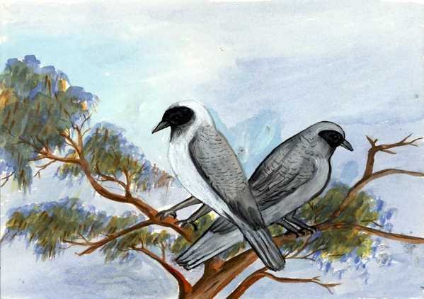

cuckoo-shrike
Coracina novaehollandiae
Thipe mekelhampwe, kaperte, thayete urrperle, tayele arlpentye akngerre.
Antywe ikwerenhe mpwareme arne akngerre akertneke. Re itwerle anemele arerle anemele, itepe arrpe anenhe, ampe apeke apetyeme-ketye antywe ikwerenhe ultaketyeke.
Antywe ikwerenhe re mpwareme arne, ngkweltye-ngkweltye mape-ngetyele ware. Arne mape aw manterre ngkweltye mape inemele. Thipe-kenhe ilpelhe-ngentyele inemele atyete mpwaremele kwarteke, ante thipe akweke ikwerenhe anetyeke.
Renhe putyeke ware aretyeke, itne apmere itwewerne apetyentye akngerre kwenye.
The Black-faced cuckoo shrike has black around the eyes and a long tail.
It makes a nest in a big tree. It sits up near the nest, looking around everywhere, in case kids come too close and break its nest.
It gathers up bits of sticks for its nest and gathers bits of old material or bird feathers laying around to make the nest soft for its eggs and for the baby birds to sit in.
You only see them in the bush, they don't come close to houses.